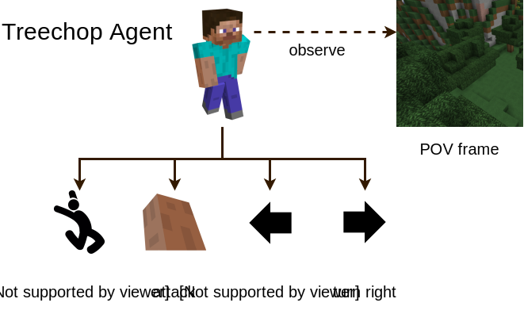
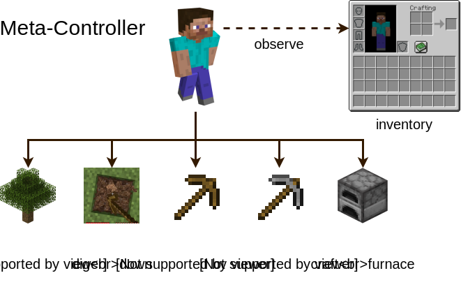
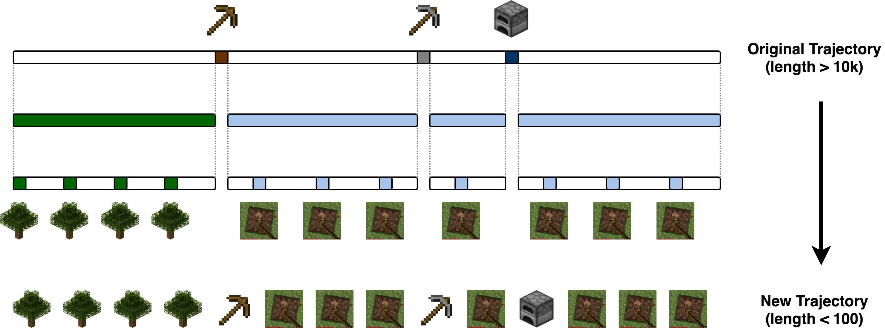

|
Overview
This is the project page of our submission for the NeurIPS 2019 MineRL competition.
Our team CraftRL ranks 4th on the final leaderboard, achieving an average reward of 23.81.
In the train/val environment, we manage to reach 50/70 in average reward.
We first train an agent to perform treechop tasks with POV frame as its observation.
Next, we fix the treechop agent and view the treechop task as an option.
Together with other options (crafting wooden pickaxe, digging down, etc.), we train
a meta-controller to decide between options, where the observation is agent's inventory.


To facilitate learning, we group actions into macro-actions.
For example, when training treechop agent, the "attack" macro-action actually consists of
35 consecutive attack actions in the original action space. In the ObtainDiamond
environment, the agent need more than 65 consecutive attacks to break a log (and get a reward).
Without action grouping, the agent may never explore this reward.
Next, we detail our method for training treechop agent and the meta-controller.
Treechop
Inspired by the baseline model,
we remove unnecessary actions (e.g. sprint, sneak) from the action space and
do some action space wrapping. Below is the mapping between macro-actions and original actions.
-
forward & jump: forward, jump, attack at the same time and repeat it for 5 consecutive frames
-
attack: attack for 35 consecutive frames
-
turn left: change yaw with \(\Delta_{yaw}=-40\) and attack at the same time
-
turn right: change yaw with\(\Delta_{yaw}=40\) and attack at the same time
We train our agent in ObtainDiamondDense environment because we find the agent trained in the
Treechop environment performs bad in ObtainDiamond environment.
A possible reason is that Treechop environment is not diverse enough.
POV frame is used as the observation and the inventory information is ignored at this stage.
Besides, we find that fixing camera pitch value at 30 could help the agent obtain more logs.
We use PPO to train the agent.
Due to memory limit, we only use 2 actors. For other hyperparameters,
please refer to the source code.
The training curve is shown below.
Meta-controller
Once the treechop agent is trained, we fix it and view it as an option.
We manually define other options and then train a meta-controller to accomplish the task.
Except "chop tree", other options are grouped actions, just like macro-actions.
A possible and reasonable improvement is to automatically construct the options instead of relying on
manual design, though we haven't explore it in the competition.
In our submission, each option is defined as follows:
-
chop tree: take several steps with the treechop agent
-
dig down: dig straight down for some steps and then attack the blocks around
-
craft wooden pickaxe: craft sticks and a crafting table,
place a crafting table, make a wooden pickaxe, then break the crafting table and collect it
-
craft stone pickaxe: place a crafting table, make a stone pickaxe,
then break the crafting table and collect it
-
craft furnace: place a crafting table, make a furnace,
then break the crafting table and collect it
In addition, we find pretraining the meta-controller on demonstration data can improve the performance.
Since the action space in the demonstration data does not match that in the meta-controller,
we apply the following mapping to align them: given a demonstration trajectory, we first find the steps
where the agent takes "nearbyCraft" actions to make wooden pickaxe or stone pickaxe or furnace.
These steps divide the whole trajectory into several segments.
We assume that the agent chops trees in the first segment and digs down in other segments.
To make the data balanced, we extract only a few steps from each segment with equal intervals.
The whole process is illustrated below. In this way, we are able to transform the action space
and at the meantime shorten the trajectory length significantly.

The meta-controller is implemented as an MLP and trained using PPO too. The training curves are shown below.
Our team
Special thanks to Yaqi Xie for helping present the results at NeurIPS 2019.
|